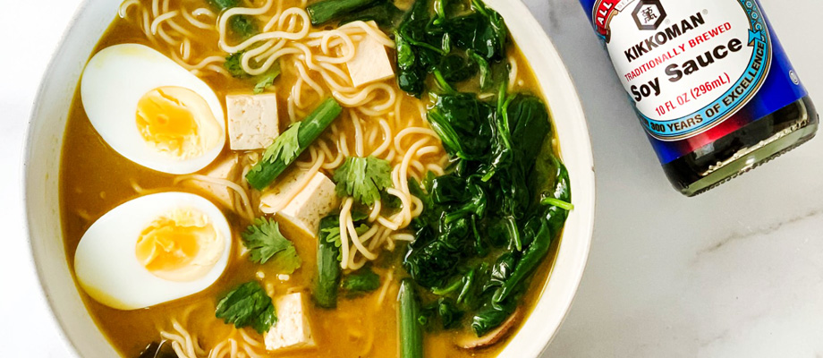

Gluten Free Ramen Recipe

Description
The Kikkoman Gluten-Free Ramen recipe offers a delicious twist on the classic comfort food, accommodating those with gluten sensitivities. This savory dish features gluten-free ramen noodles bathed in a flavorful broth made with Kikkoman Gluten-Free Soy Sauce, complemented by a medley of fresh vegetables and protein of your choice. A perfect fusion of traditional Japanese flavors with a gluten-free twist for a satisfying and accessible ramen experience.
Ingredients
- 2 tablespoons olive oil
- 4 green onions, chopped into 1-inch pieces
- 4 garlic cloves, minced
- 3-inch cube of ginger, minced
- 1 ounce mushrooms, sliced
- 32 ounces vegetable broth
- 1 cup water
- 2 tablespoons Kikkoman® Gluten-Free Soy Sauce
- 1 tablespoon white miso paste
- 1 teaspoon maple syrup
- 1 egg, soft-boiled
- 2 packs gluten-free ramen noodles
- Optional: tofu, spinach, cilantro, & green onions to garnish
Steps/Directions
- Heat the olive oil in a large pot on medium-high heat.
- Add the green onion, mushrooms, garlic and ginger to the pot and sauté for 2 minutes.
- Add the vegetable broth, water, Kikkoman® Soy Sauce, miso paste, and maple syrup mix well and bring to a boil, turn down the heat and let simmer for 10 min.
- While broth is simmering cook your ramen noodles according to the package instructions, set aside.
- Peel soft-boiled egg and cut in half.
- Add the noodles and egg to the broth and enjoy! If wanted, serve ramen with chopped green onion, fresh cilantro and some steamed baby spinach.